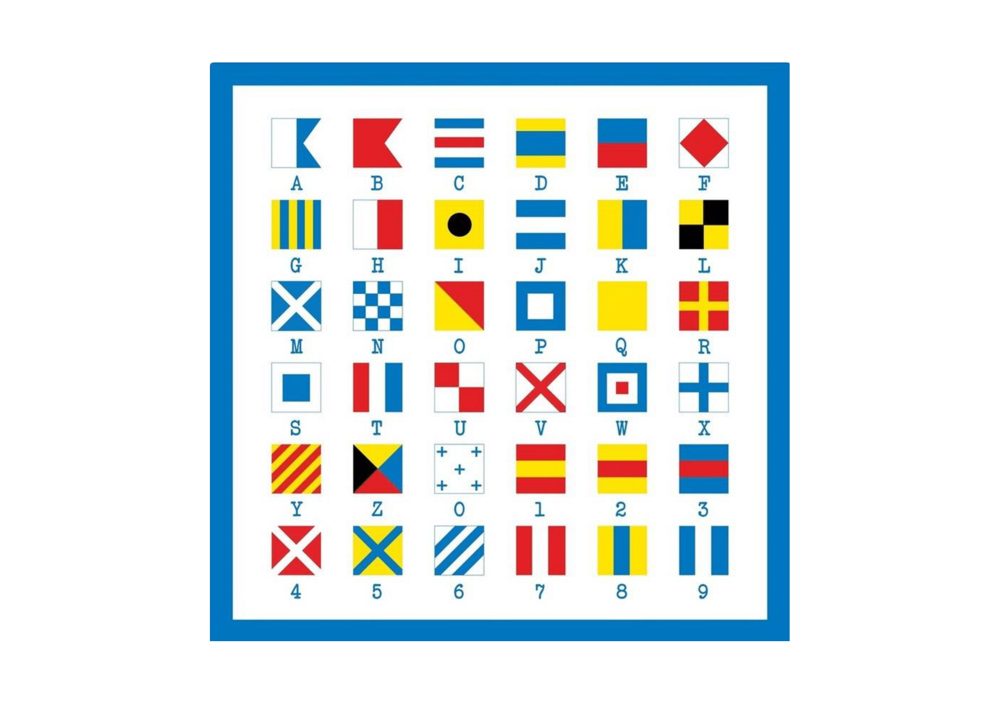

<ion-header>
  <ion-toolbar>
    <ion-back-button color="primary" slot="start"></ion-back-button>
    <ion-title color="primary" style="align-items: center;">indice1</ion-title>
  </ion-toolbar>
</ion-header>

<ion-content>
  
</ion-content>
